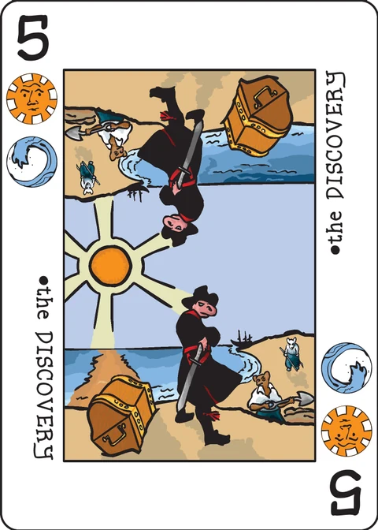

Quetinny
a solitaire game of trade, profit and luxury for a seasoned entrepreneur
Design note from the wiki: "The game is under development and it is much easier to update the Google document at this point than it is to copy changes to the Wiki. Please refer here for the newest changes as the details tomorrow won't be updated until the game is stable."
Which text is the rule
The wiki page points at an external Google Doc as the source of truth. This implementation fetched both and compared them. The Google Doc's own Version History ends at "5/25/14 … Extended deck is now required"; the wiki page is at revision 11, last edited 23 February 2018, and carries rules the Doc does not have (taxes reduced by suit chips, Crowns taxed at rank 15, the end-game Ace-and-Crown requirement, optional extended deck). The Doc is therefore an older snapshot of the same design, and the wiki page is the later — and richer — text. This app treats the wiki page (rev 11) as the text of record and implements it; where the Doc differs, that is noted below. Both texts agree that the game is a work in progress.
Background
The clans of Quetinny are a peaceful lot and each one is renowned for exotic dyes and riches unique to their corner of the world. The most prized of these luxuries are the spices each clan produces; the Wyrms cure scaline grass to treat mysterious ailments. The Tribes of the Sun produce an esoteric blend of catnip and mustard that leaves diners frisky with a bad taste in their mouths. The Blue Crescents harvest moonlight seed for wines that have been fermenting for centuries. The Oak Ones have passed their recipes of pollens and seeds to transform the most wretched of foodstuffs into spectacular delicacies. Oceanix prefer to dabble with kelp, plankton, crushed shells and oyster jams for their sublime palates. Then there are the Merchants of the Knot who don't really care about any of this but are more than happy to take all of this stuff, throw it on carts and ship it to everyone else.
You have been trading for several years but it has been increasingly difficult to make a living… the royals are demanding ever more tribute to maintain their perfectly manicured estates and even though provincial relations are warm the endless haggling between clans grows tiresome.
Your dearest hope is to make it to the end of the year with enough gold put away to ease into a comfortable retirement. Acquiring choice Blue Crescent spirits along the way wouldn't hurt either.
Basic flow of play
A tableaux of cards is built that represents the provinces in the kingdom. Aces produce spice which needs transported by caravan to the matching suit Crown. Caravan routes are created by sequences of rank cards marked by suit tokens. You will also play cards to produce spice and use cards to determine how far your caravans can trade. At the end of your turn you will pay (high) taxes. Play continues until you are broke or all cards have been used. If you have any money left over you win and if you end with more money than you started you win outright.
Setup
You will need the Basic Decktet with 6 suit chips for each suit plus an extra set of 6 spice cubes in a different color. Poker chips or coins are recommended but a pen and paper can be used to keep track of your gold.
- Draw 4 cards and place them in a 2x2 grid in the center of the table so that there is only one Ace or one Crown in the tableaux. If none of the cards drawn are an Ace or Crown, continue discarding and drawing until there is an Ace or a Crown in the tableau. Be sure to reshuffle the discards back into the deck. Place one matching suit chip for each card so that only one suit chip is on each card. If an Ace is on the table, place one spice cube on it as well.
- Draw four more cards for your starting hand. You will always start your turn with 4 cards in your hand.
- Place the spice cubes in a supply next to the playing area.
- Take 25 gold and place it in front of you.
Game play
Turn sequence: each turn you will perform each of the following actions in order:
- Expand:
- Add a Province to the Tableaux and Expand a Trade Route or
- Harvest Spices or
- Send a Caravan or maybe
- Discard one card.
- Pay Taxes.
- Make Sure It's Not the End of the Game.
- Refill Your Hand.
Add a Province and Expand a Trade Route
Choose one of the suits on the card you want to play and place it as a province in the tableaux. A province must be placed orthogonal (east to west or north to south) to an existing province. If it is a rank card then it must be adjacent to another province of the same suit but Aces and Crowns do not. Aces and Crowns may never be orthogonally adjacent to other Aces or Crowns. Provinces may not be stacked and they are never moved.
At this point you may place one suit chip on any province in the kingdom if it is not already part of a trade route and it also must expand an existing trade route for that suit. Routes will always trace back to an Ace, a Crown or a suit chip placed at the start of the game. If you do not have a matching suit token in the supply then you are not able to place one. Suit chips are never removed from a province and only one suit chip can be on a province.
The same suit is used for both parts of this action.
(Or) Harvest Spices
You may use a card to place 2 spice cubes on a matching Ace for each suit on the card. If you run out of spices in the supply then the remainder are not placed. Place your card in the discard pile.
(Or) Send Caravans
You may play a card to transport spice cubes from an Ace to its matching Crown. Both suits may be used. Each route must increase in rank for each card traversed but it does not need to be sequential. A card may not be used twice and a path cannot cross itself. Your route can zigzag diagonally or orthogonally.
The played card's rank determines how many provinces can be crossed between both suits (or only the one suit). The Crown and Ace are counted as a card as part of the delivery.
Once a spice cube is delivered it is returned back to the supply. Discard the card you placed for delivery. Collect gold based on the chart below. Each card including the Ace and Crown is included in the number of cards used. It is possible for diagonal Aces and Crowns to produce a route of only 2 cards.
| Cards | 2 | 3 | 4 | 5+ |
|---|---|---|---|---|
| Gold | 4 | 8 | 16 | 32 |
(Or maybe) Discard
You may only discard a card if there is no possible legal play. This should happen rarely if at all.
Pay Your Taxes
Finally, taxes are deducted at the end of each turn. You must play a card to pay them. The gold you owe is the rank of the card minus the number of suit chips for each suit on the card in play. Crowns are considered to have a rank of 15 for taxes. You may not receive gold from a tax but it is possible to not pay any tax at all.
Make Sure It's Not the End of the Game
If you are unable to pay your debts at the end of your turn then the game is over and you are a catnip mustard junkie. Otherwise, continue to work your way through the deck until there are no cards left to draw. On your final hand you may play one more card as normal but 2 of the 3 remaining cards in your hand are taxed.
Refill Your Hand
Replenish your hand back to 4 cards. You will always have 2 cards at the end of your turn. You may inspect cards in the discard pile at any time.
End of game scoring
If you do not have an Ace or a Crown of each suit on the board you automatically lose. The clans are very demanding and want their luxuries. If you have any gold remaining you have won the game and if you have more gold than you started with you have won outright. If you owe gold or have no gold then you have lost.
The extended deck
Any combination of the Courts, Pawns and the Excuse may be used to tailor the game experience to your own liking:
- Excuse: the Excuse can be used at the beginning of the game as the center of a cross formation. Since the Excuse has no suits, it is impassable and barren.
- Courts: one of the 3 suits of the Courts are used to expand a trade route. This extra suit gives you more options, however, it does not earn gold when spice is transported. For example, if a route of 5 cards is played you would earn 16 gold for the caravan instead of 32. A route of 6 cards, however, would earn you 32 gold. A Court is worth 10 gold for taxation.
- Pawns: Pawns are crossroads for your caravans. The card may have two different suit tokens for 2 suit tokens on the card. Like the Courts, Pawns do not produce income. Pawns also are worth 10 gold for taxation.
Note on this implementation
Basic deck only. The current wiki text needs the Basic Decktet; the extended-deck options above are described in the wiki but are not implemented in this app version.
Setup. The wiki spells out redrawing when no drawn card is an Ace or Crown, under the heading "so that there is only one Ace or one Crown". This app redraws (reshuffling the discards back in) until the 4-card tableau contains exactly one Ace-or-Crown. The suit chip on each starting card is the player's choice in the physical game; here the game's seed picks one of the card's suits (spice on a starting Ace comes with it).
Chip placement. "Place one suit chip on any province … it also must expand an existing trade route for that suit" is implemented as: the target province has no chip yet, is not an Ace or Crown (those are a route's roots), and touches — orthogonally or diagonally — a province that is on the suit's route (carries that suit's chip, or is that suit's Ace or Crown). Each new chip therefore always connects back to a starting chip, an Ace or a Crown.
Caravan routes. A delivery route for suit S is a path that starts at the Ace of S, ends at the Crown of S, steps between touching provinces (8-directionally), never repeats a province, strictly increases in rank at every step, and passes only through provinces carrying an S chip between the two ends. Its length (Ace and Crown counted) may not exceed the rank of the card you play to pay for it — Aces are rank 1 and so can never pay for a delivery; Crowns count as 10. Each delivery carries one spice cube from the Ace back to the supply. This reading follows "Caravan routes are created by sequences of rank cards marked by suit tokens" and "routes will always trace back to an Ace, a Crown or a suit chip placed at the start of the game".
Taxes use the wiki's 2018 formula — rank of the card minus the board's suit chips for each of its suits, clamped at 0, Crowns at rank 15. (The older Google Doc version, not used here, made Aces/Crowns/Courts/Pawns free with an end-game penalty.)
The final hand. When the deck is exhausted and your hand is under 4, that turn is the final one: you play one action card as normal, and every card remaining in your hand (1 or 2, depending on how the deck ran out — the wiki's "2 of the 3") is automatically taxed. If that breaks you, you lose.
The end-game clause "an Ace or a Crown of each suit" is read literally: each suit must have at least one of its two courts — its Ace or its Crown — on the board at the end. (The stricter "both" reading would demand all twelve court cards on the board inside the game's roughly sixteen turns, which its own tempo makes all but impossible.)
The wiki names no numeric score; this app records your gold at game's end, and counts both win flavours (with gold left / more gold than you started with) as wins.
Credits
Game design: Jack Neal. Rules text as published on the Decktet wiki, with the Google Doc ("Google Doc Source of Rules", linked from the wiki page) consulted and compared as above.
These rules are copied from the Quetinny page of the Decktet wiki (page revision 11, 23 February 2018) so they can be read offline, under the wiki's CC BY-NC-SA 3.0 licence. Cards by P.D. Magnus, same licence.
Further reading: Quetinny at BGG (work in progress thread) · the designer's Google Doc